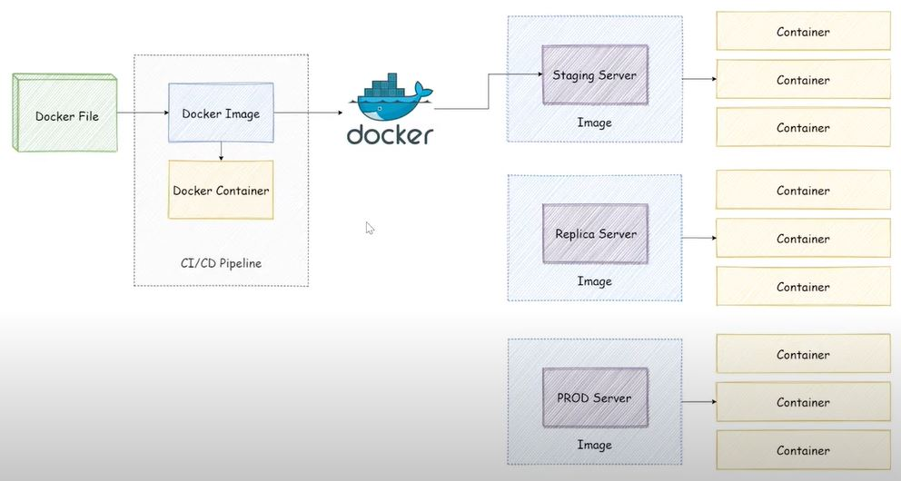
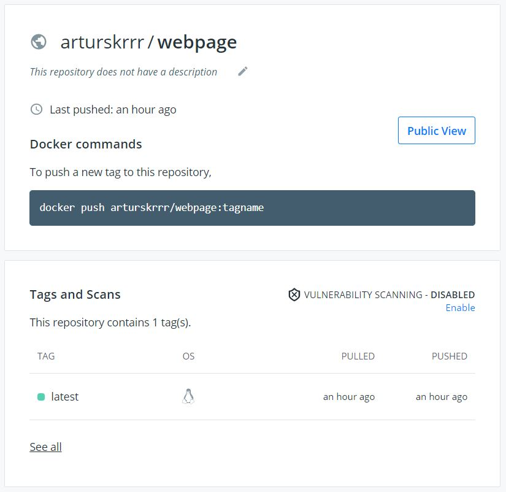
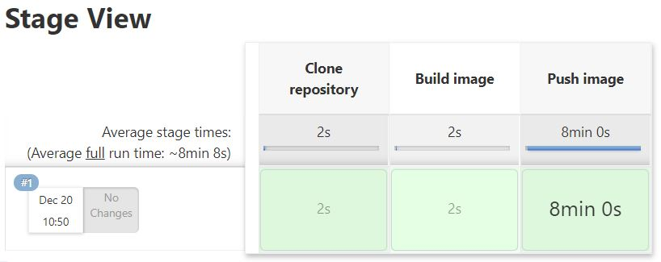

App's Lifecycle with CICD
Intro
CICD is a set of rules, requirements, good practicies and tools for working on software projects. It provides automation of integrating code changes, testing changes against the application, delivering it to remote repository and deploying in production environment. That way, it creates certain compromise between developers who want to make changes to the code fast and frequently and server admins whose aim is to keep application on server's side stable.
Waterfall vs Agile model:
| Waterfall model | Agile model |
|---|---|
| Usually for small development projects. | Usually for large develpment projects. |
| It's a sequential process where each phase is performed once. | It's an iterative process where each phase can be repeated many times but in shorter period. |
| Phases are performed one by one and feedback is possible at the end of the process. | Each iteration goes through each phase and gets a new feedback each time. |
| Requirements defined and unchanged along the way. | Requiremetns can evolve along the way. |
| Unables us to go backwards to planning and designing stage to add some new requirements. | Due to its iterative nature, it's much simplier to add a new requirement. |
| Testing comes after development. | Testing and development go concurrently. |
Software Development Lifecycle:
- It is not the methodology itself but rahter a description of each step in the process.
- These steps are:
1. Requirement gathering and analysis.
2. Software design.
3. Development and testing.
4. Implementation.
5. Documentation.
6. Evaluation.
7. Maintenance.
- CICD tools support software development process.
Modern CICD solutions through entire software development lifecycle:
- continuous integration,
- continuous testing,
- continuous delivery,
- continuous deployment,
DevOps stages:
1. Version Control:
- Maintaining different versions of code with Version Control System.
- Managing source code of an application when multiple developers working on it.
2. Continuous integration:
- Building (compiling) the application continuously by pulling the code from repository everytime change to the code commited.
- Most of modern apps requires different techonologies during development. In addition, multiple developers work simultaneously on different features of the same app. This is why dev teams need a mechinizm for code integration and app compilation.
- A good practice is when developers commit their changes to a version repository frequently - at least one time per day.
- These small chunks of code are much easier to analyze, debug and test it out with unit and integration testing, as opposed to a big block of code.
- Successfully performed CI means new code changes to an app are regularly built, tested, and merged to a shared repository or packed to WAR or JAR package.
- This is a solution to a common problem of having too many branches of an app from different developers at once which may lead into a confilct.
- Workflow:
1. Developer pushes a commit to GitHub.
2. GitHub's webhook notifies Jenkins about commit was made..
3. Jenkins pulls the GitHub repository (app's code, test code, Dockerfile).
4. Jenkins builds a Docker image on the slave node.
5. Jenkins runs the Docker container on the slave node.
6. Jenkins executes unit and integration tests.
7. If tests executed successfully, Docker image is pushed to Docker hub or Docker Trusted Registry.
8. Docker Trusted Registry is the place where we can start delivery/deployment from.
3. Continuous testing:
- Every time there is a commit from a developer, the app is being pulled from Version Control System, built and tested out using automated tests.
- The App or its fragments undergoes tests if they work properly due to the set of assumptions.
- The most important test is regression testing of whole application in the context of provided changes.
- Regression testing is basically re-running functional and non-functional tests on the application in order to make sure that recently developed and tested software still performs after a change. If test fails then we have a regression.
- The best practice is to perform regression tests in local environment before pushing application into a remote repository.
4. Continuous delivery:
- It comes when app built, validated and tested out to release the code to a remote repository (like GitHub or a container registry).
- It just makes sure that the app is alwyas in a production-ready state - always ready to be released to a production environment.
- In ensures smooth and clear communication and workflow between dev teams and operations teams.
- Teams, using cloud solutions, deliver their app with containerizated by Docker or Kubernetes form.
- Container replicates the production environment and its image is pushed to Docker Hub from where we can run container on production server while deployment.
5. Continuous deployment:
- Whereas continuous delivery automates commiting the code in a production-ready state to the repository, continuous deployment automates releasing an app from the repository to production.
- It prevents operations teams from getting overloaded by manual processses that slows down app deployment.
- Fast and automated deployment of developer's change allows getting and incorporatting user feedback much faster.
Features
App includes following features:
Demo
Jenkins Pipeline:
- One of the best open source tool for CICD is Jenkins.
- Jenkins provides interface and tools to automate the entire process of software development lifecycle.
- Jenkins handles anything from a simple CI server to a complete CD hub.
- Instead of having multiple processes chained together we can put enite workflow in the Jenkins Pipeline.
- Jenkins Pipeline runs entire job as a code written in one script in Jenkinsfile
- Piepeline as a code:
- coding all jobs in one script,
- can be check in Version Control System,
- takes user input to interact with the pipeline,
- saving checkpoint to start from instead of redoing all work from 0,
- jobs are bing run in parallel,
- can integrate other plugins like Git, Docker,
- syntax enriched with conditional loops.
Jenkinsfile:
- Text file stroring pipeline as a code.
- Written using Groovy Domain Specific Language.
- Can be written in two ways: declarative pipeline or scripted pipeline.
- Declarative pipeline:
- code can be writeen locally in a file and pushed to Source Control Management (SCM) system,
- code defined within a pipeline block which contains all the stages. - Scripted pipeline:
- traditional way where code is written in Jenkins UI,
- code diefined within a node block.
Declarative pipeline:
- Agent is an executor which runs entire pipeline or a specific stages.
- Within stages we can declare single stage.
- Each stage has following steps.
- Code:
pipeline {
agent any
stages {
stage ('Build') {
...
}
stage ('Test') {
...
}
stage ('QA') {
...
}
stage ('Deploy') {
...
}
stage ('Monitor') {
...
}
}
} - As above, all the stages under
agent anywill be run on any available agent. - When defining pipeline in Jenkins we need to choose Git as SCM and provide repository URL as well as file name that will be used as Jenkinsfile.
- Running stages in parallel:
...
stage ('Test') {
parallel {
stage('Unit Test') {
...
}
stage('Integration Test') {
...
}
}
}
Demo:
- Workflow schema:
source: Daily Code Buffer - Jenkins pipline encapsulates:
1. Cloning Repository (link in source code setcion).
2. Building image.
3. Pushing image to Docker Hub.
- Github Repository includes: Dockerfile, Jenkinsfile, app's code
- Final output on Docker Hub:


Setup
Pulling Jenkins from Docker Hub:
- Terminal:
docker pull jenkins/Jenkins
docker run jenkins/jenkins
it informs that Jenkins is available on localhost:8080, ang gives first password login